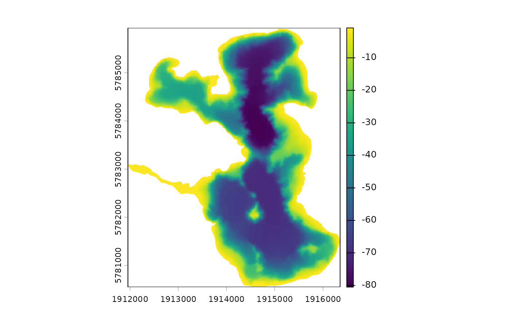

Merge lake bathymetry raster with a DEM raster
merge_bathy_dem.RdMerge lake bathymetry raster with a DEM raster
Usage
merge_bathy_dem(
shoreline,
bathy_raster,
dem_raster,
transform_shoreline = TRUE,
catchment = NULL,
crop_dem_to_catchment = TRUE
)Arguments
- shoreline
sf object of lake shoreline.
- bathy_raster
SpatRaster object with the bathymetry data.
- dem_raster
SpatRaster object with the DEM data.
- transform_shoreline
logical. If TRUE, the shoreline will be transformed to match the CRS of the DEM raster.
- catchment
sf object of the catchment boundary. If provided, the DEM raster will be cropped to the catchment boundary.
- crop_dem_to_catchment
logical. If TRUE, the DEM raster will be cropped to the catchment boundary. Requires catchment to be provided.
Examples
shoreline <- readRDS(system.file("extdata/rotoma_shoreline.rds",
package = "bathytools"))
catchment <- readRDS(system.file("extdata/rotoma_catchment.rds",
package = "bathytools"))
point_data <- readRDS(system.file("extdata/depth_points.rds",
package = "bathytools"))
bathy_raster <- rasterise_bathy(shoreline = shoreline,
point_data = point_data, crs = 2193)
#> Generating depth points... [2024-09-22 22:56:04]
#> Finished! [2024-09-22 22:56:05]
#> Interpolating to raster... [2024-09-22 22:56:05]
#> Adjusting depths >= 0 to 0.4 m
#> Finished! [2024-09-22 22:56:24]

dem_raster <- terra::rast(system.file("extdata/dem_32m.tif",
package = "bathytools"))
dem_bath <- merge_bathy_dem(shoreline = shoreline, bathy_raster = bathy_raster,
dem_raster = dem_raster, catchment = catchment)
#> Warning: Resolutions of bathy_raster [2, 2] and dem_raster [32, 32] do notmatch. Resampling bathy_raster to match dem_raster
#> Lake surface elevation from DEM: 313.3 m